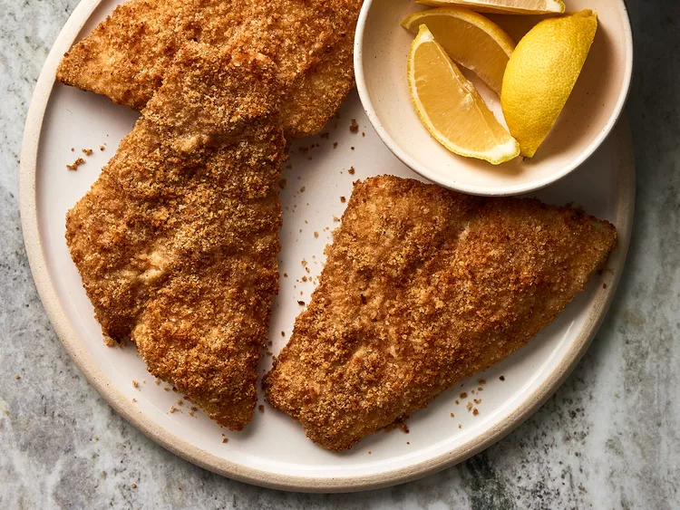

Home
Air-Fried Crumbed Fish

Description
Fish with bread crumbs, fried with air.
Ingredients
- 1 cup dry bread crumbs
- 1/4 cup vegetable oil
- 4 flounder fillets
- 1 egg, beaten
- 1 lemon, sliced
Steps
- Preheat an air fryer to 350 degrees F (180 degrees C).
- Place bread crumbs and oil into a shallow bowl; stir until mixture becomes loose and crumbly.
- Dip fish fillets into egg; shake off any excess. Dip fillets into bread crumb mixture; coat evenly and fully.
- Lay coated fillets gently in the air fryer basket; cook in the preheated air fryer until fish flakes easily with a fork, about 12 minutes.
- Garnish with lemon slices; serve.